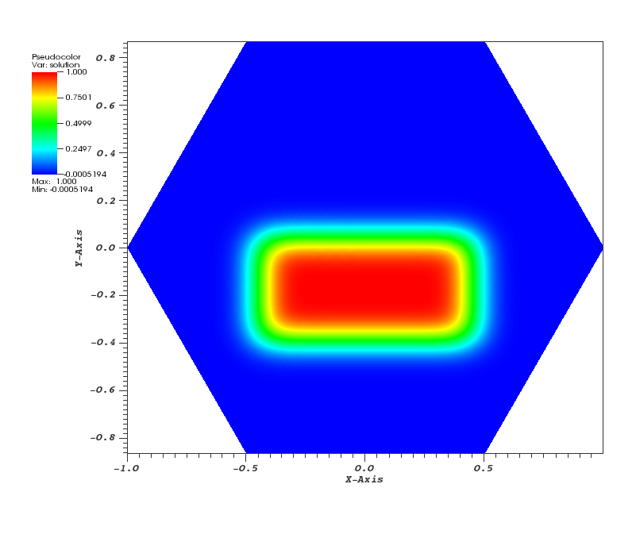
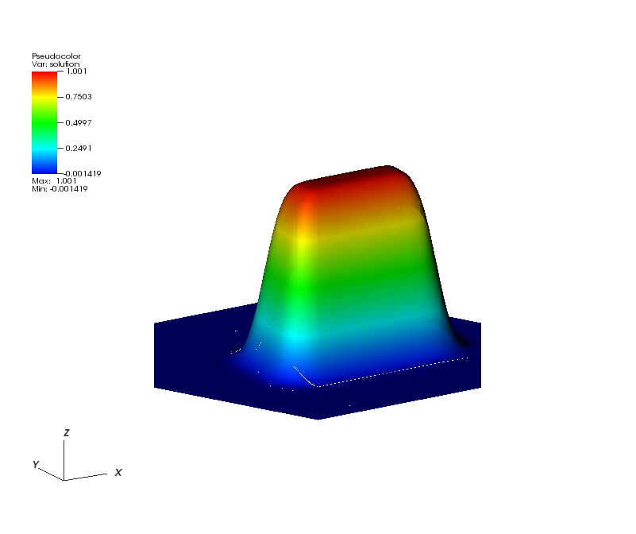
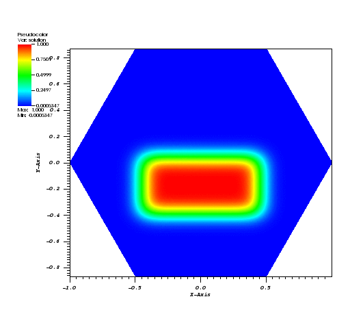

Role and Impact of Time Integrators in Time to Solution
Time Integration & Non-Linear Solvers
At a Glance
| Questions | Objectives | Key Points | |
| How does the choice of explicit vs. implicit impact step size. |
Compare performance of explicit and implicit methods at step sizes near the stability limit. |
Time integration considerations play a role in time to solution. |
|
| What is the impact of an adaptive time integrator? |
Compare fixed and adaptive time integrator techniques. |
The PETSc package has robust and flexible methods for time integration. |
|
| How does time integration order impact cost? |
Observe impact of order on time to solution/flop and number of steps. |
In well-designed packages, changing between methods does not require a lot of effort. |
|
| Observe quadratic convergence of Newton’s method |
Observe mesh independent convergence of Newton’s method |
Note: To begin this lesson…
cd HandsOnLessons/time_integrators
The problem being solved
The example application here, advection-ode.cpp uses a discontinuous Galerkin discretization from MFEM and the ODE solvers from PETSc to demonstrate the use of PETSc in both serial and parallel for more robust and flexible control over time integration (e.g. discretization in time) of PDEs.
The first application has been designed to solve the Advection Equation in 1, 2 or 3 dimensions as well as to work in a scalable, parallel way.
where is a given fluid velocity and is a given initial condition.
Here, all the runs solve a problem on a periodic, hexagonally bounded mesh with an initial rounded step function of amplitude 1.0 slightly off-center as pictured in Figure 1.
| Figure 1 | Figure 2 | Figure 3 |
|---|---|---|
|  |  |  |
{kind=link}
{kind=link}
{kind=link}
Getting Help
You can get help on all the command-line options to this application like so…
./advection-ode --help
Usage: ./advection-ode [options] ...
Options:
-h, --help
Print this help message and exit.
-m <string>, --mesh <string>, current value: ../../../data/periodic-hexagon.mesh
Mesh file to use.
-p <int>, --problem <int>, current value: 0
Problem setup to use. See options in velocity_function().
-rs <int>, --refine-serial <int>, current value: 2
Number of times to refine the mesh uniformly in serial.
-rp <int>, --refine-parallel <int>, current value: 0
Number of times to refine the mesh uniformly in parallel.
-o <int>, --order <int>, current value: 3
Order (degree) of the finite elements.
-s <int>, --ode-solver <int>, current value: 4
ODE solver: 1 - Forward Euler,
2 - RK2 SSP, 3 - RK3 SSP, 4 - RK4, 6 - RK6.
-tf <double>, --t-final <double>, current value: 10
Final time; start time is 0.
-dt <double>, --time-step <double>, current value: 0.01
Time step.
-vis, --visualization, -no-vis, --no-visualization, current option: --visualization
Enable or disable GLVis visualization.
-visit, --visit-datafiles, -no-visit, --no-visit-datafiles, current option: --visit-datafiles
Save data files for VisIt (visit.llnl.gov) visualization.
-vs <int>, --visualization-steps <int>, current value: 50
Visualize every n-th timestep.
-usestep, --usestep, -no-step, --no-step, current option: --usestep
Use the Step() or Run() method to solve the ODE system.
-implicit, --implicit, -no-implicit, --no-implicit, current option: --no-implicit
Use or not an implicit method in PETSc to solve the ODE system.
Run 1: Explicit Method Default Options
PETSC_OPTIONS="-ts_view -ts_adapt_monitor no" ./advection-ode -no-vis
The L2 error at the final timestep is printed for each run below.
Run 2: Explicit, with Euler and fixed timestep of 0.001
PETSC_OPTIONS="-ts_view -ts_monitor :/dev/null -ts_type euler -ts_dt .001" ./advection-ode -no-vis
Run 3: Explicit, with Euler and fixed timestep of .01
PETSC_OPTIONS="-ts_view -ts_adapt_monitor no -ts_type euler -ts_dt .01" ./advection-ode -no-vis
The explicit algorithm is unstable for the specified timestep size.
We can shrink the timestep or use an implicit method.
Run 4: Implicit, Fixed at 0.01
Now, lets switch to an implicit method and see how that effects behavior of the numerical algorithms.
PETSC_OPTIONS="-ts_view -ts_adapt_monitor no -ts_dt .01" ./advection-ode -implicit -no-vis
Run 5: Implicit, Fixed at 0.1
Now, use a very large time-step and note the scheme remains stable.
PETSC_OPTIONS="-ts_view -ts_adapt_monitor no -ts_dt .1 -log_view :/dev/null" ./advection-ode -implicit -no-vis
Run 6: Implicit, Adaptive , Tolerances 1e-4, 4th Order
In this run, we’ll combine both the advantages of an implicit algorithm and an adaptive time step.
PETSC_OPTIONS="-ts_view -ts_adapt_monitor no -ts_type arkimex -ts_dt .1 -log_view :/dev/null" ./advection-ode -implicit -no-vis
Run 7: View a summary of the operations for Implicit, Adaptive , Tolerances 1e-4, 4th Order
The -log_view option
PETSC_OPTIONS="-ts_view -ts_adapt_monitor no -ts_type arkimex -ts_dt .1 -log_view " ./advection-ode -implicit -no-vis
The problem being solved
The example application here, elasticity-snes.cpp uses MFEM and the ODE solvers from PETSc to solve a time-dependent nonlinear elasticity problem.

Run 8: Quadratic convergence of Newton’s method
make elasticity-snes
./elasticity-snes
Run 9: Mesh independent convergence of Newton’s method
./elasticity-snes -rs 2
./elasticity-snes -rs 4
Out-Brief
We have used MFEM and PETSc as a demonstration vehicle for illustrating the value in robust, time integration methods in numerical algorithms. In particular, we have used the PETSc integrators to compare and contrast both the effects of adaptive time stepping as well as the role the order of the time integration plays in time to solution and number of time steps in the adaptive case. In addition, we have demonstrated the ability of implicit methods to run at higher time steps than explicit and also demonstrated the cost of nonlinear solvers in implicit approaches.
The use of adaptation here was confined to discretization of time. Other lessons here demonstrate the advantages adaptation can play in the discretization of space (e.g. meshing).
Finally, it is worth reminding the learner that the application demonstrated here can be run on 1, 2 and 3 dimensional meshes and in scalable, parallel settings and on meshes of extremely high spatial resolution if so desired.
Evening Hands On Session
Run the two examples with a different number of levels of refinement using -rs n and the -log_view option introduced above to explore the scalability of the algorithms. For example
PETSC_OPTIONS="-ts_adapt_monitor no -ts_type arkimex -ts_monitor :/dev/null -log_view " ./elasticity-snes -rs 2 -no-vis
then again
PETSC_OPTIONS="-ts_adapt_monitor no -ts_type arkimex -ts_monitor :/dev/null -log_view " mpiexec -n 4 ./elasticity-snes -rs 2 -no-vis
Try other combinations of levels of refinement and number of processes. Produce a small scaling plot showing scaling of algorithms from say 1..32 mpi ranks.
When you are done, be sure to submit a Show Your Work using the hands-on activity name Time Integrators Scalability and upload evidence of your completed solutions.